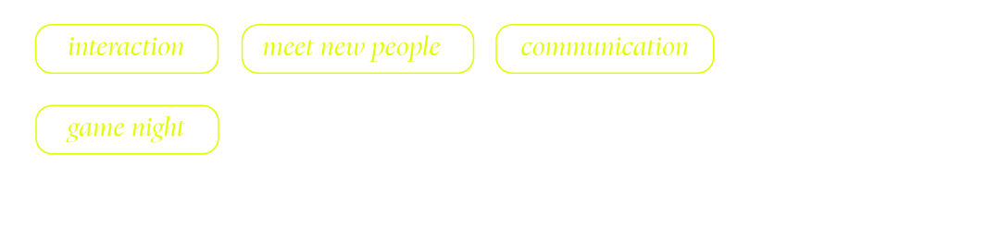

About me/
“Relational design is preoccupied
not just with design's form
or meaning ,
with its effects;not with (isolated) objects,
but rather with situations
(An)embedded in everyday life”
Hobbies/

My Values/
autonomous, independent, isolated,
and closed, relational
design is synonymous with interdependence,
connectedness, and openness.
It evokes today’s networkculture,
both literally and metaphorically,
and the web of associations,
uses, and contexts determiningdesign today.
share my profile with someone
xoxo <3